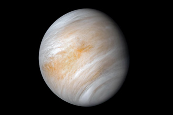
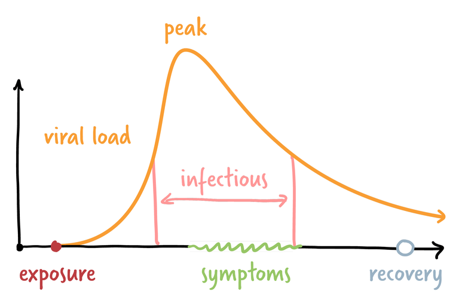
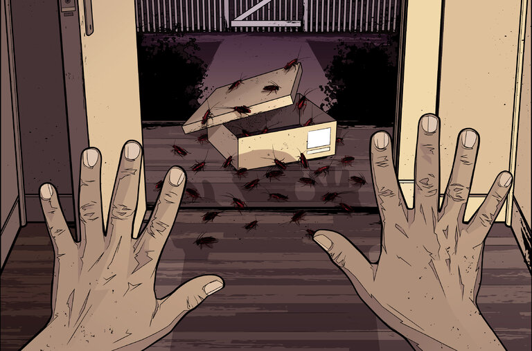

It's been a while — like, forever — since anyone claimed to have discovered life on Venus. And truth be told, the scientists who announced on Sept. 14 the discovery of phosphine, a gas, in Venus's atmosphere did not claim to have discovered life, either — only that they could not think of anything that might have produced it other than microbes in the clouds.
Continue reading >
Harvey J. Alter, Michael Houghton and Charles M. Rice were jointly honored for their decisive contribution to the fight against blood-borne hepatitis, a major global health problem.
Continue reading >
People are basically good was eBay's founding principle. But in the deranged summer of 2019, prosecutors say, a campaign to terrorize a blogger crawled out of a dark place in the corporate soul.
Continue reading >